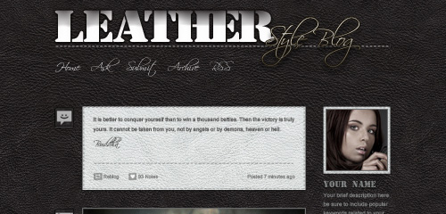
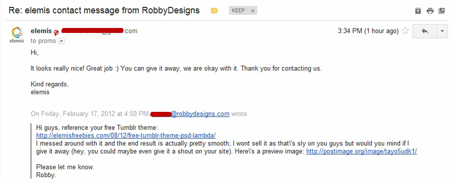
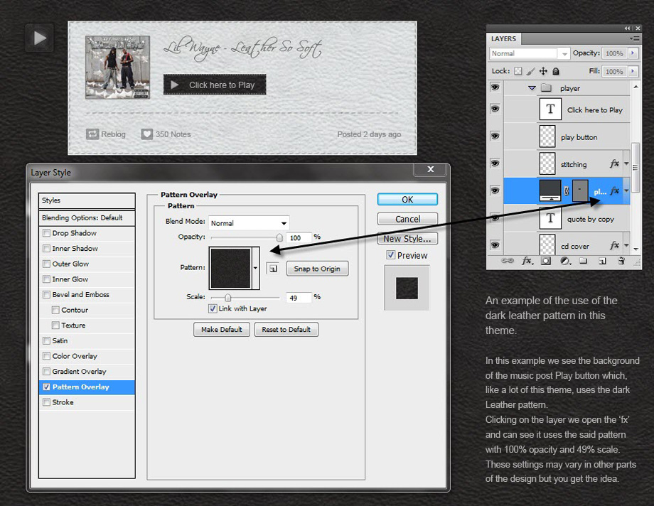
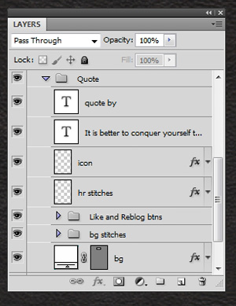

'Leather Style Blog' Tumblr theme. Created: 3rd Feb 2012 by RobbyDesigns
Introduction

Thank you for downloading this free template, please read this Help file in full before requesting any more help as answers given within will not be repeated.
About 'Leather Style Blog' Tumblr theme
'Leather Style Blog' is a Tumblr theme PSD with striking typography and an upmarket look and comes as one fully layered PSD Help file detailing the layout, sources used and some tips on editing the PSD. This is not a Tumblr theme, just a design of a Tumblr theme created in Photoshop over the course of three days.
The following were used in the creation of this template:
Theme
When I created this design I did so in a quiet week and wanted to see for fun what I could do with Tumblr in mind; having never done any Tumblr design I based it on the great freebie 'Lambda' by Elemisfreebies.com which I edited heavily for this freebie. I have permission to give away this offshoot:

Fonts
'a_Stamper' (used in the logo) - free from Ttfonts.netPhotoshop can be a pin to find this font once installed. If you can't find it in Photoshop's font dropdown, scroll to the first 'B' font, it will be above that.
'Scriptina' (used in the slogan and nav) - free from Dafont.com
Background pattern 'Free Tileable Leather Patterns' free from Webtreats.mysitemyway.com
Stitches based on 'Stitched fabric accordion PSD' free from Premiumpixels.com
Profile photo from 123RF.com
'Young woman making fashion self portrait' from 123RF.com
'Long legs in snakeskin shoes with handbag over black' by 123RF.com
'Vimeo Player GUI PSD' free from Tyronlayley.com Did You Know: You can get a huge collection of photos and graphics you can use and include in your designs for one low fee: GraphicsKnockout.com
PSD
In your pack you will find the following PSD files:
leather-style-blog.psd - The design
Editing these files is simple enough for anyone with even a basic grasp of Photoshop. Only simple effects were used in this design so I feel there is little point in explaining each and every layer of the PSD's here; if you are new to Photoshop I would recommend you visit this website.
Editing the text:
Once you have downloaded and installed the fonts detailed in the Sources section you're ready to edit.
Either click the 'T' in your layers palette or choose the 'Type Tool' from the Photoshop 'Tools' and type the text you desire. Text which uses effects can be edited thus - double click where it says 'fx' and you can edit the special effects which are in use on that layer (such as Drop Shadow, Color Overlay, etc).
Editing the images:

Patterns are used widely in this design! Please refer to the above image for details; I used only the black version of the 'Free Tileable Leather Patterns' (as detailed in the sources section). If you've never used Patterns in Photoshop before I recommend you read this article.
Let me explain the rest of the PSD:

As complicated as it may first seem this is in fact a relatively simple theme that uses the same effects for each section so I'll detail the 'Posts' section here:
Open the 'Posts' folder, now open the 'Quote' folder and it looks like the preview to the right.
Running down the list, our first layer is 'quote by' which is a simple text layer with no effects as is the second layer 'it is better...'. The 'icon' layer denotes the icon to the left of the post type; in this case it's a quote so it uses the quote icon with some drop shadow. The drop shadow also appears on the stitches layer.
Next we have a sub-folder called 'Like and Reblog btns' which is copied all the way through all of the post types in this PSD. This folder contains the original Tumblr icons for reblog and like plus some simple text so you should have no need to edit these.
Our last sub-folder is called 'bg stitches' and contains some images of stitches which group together to become the frame around the 'bg' (background) for that post.
You can edit the size of the stitches by using the 'Stitched fabric accordion PSD' as detailed in the sources section.
You will quickly realise that I duplicated fx throughout the theme - most text has the same fx, most images have the same fx; I did this so that if you decide to code the theme it will make your life easier.
Other
Like I said, this is not a 'live' Tumblr theme, just a design of a Tumblr theme created in Photoshop.
For this to become a true 'live' Tumblr blog you'd need to have it coded (see 'More Help').
More Help
I'd be glad to help you if you have any questions relating to this template. In order that I need not repeat myself and to prove your purchase you must leave your question in the 'Comments' section on this template's page. Direct email will get no response.
If you would prefer I edit this template for you I am available at the set rate of £15 per hour. www.robbydesigns.com
For the latest news, templates, freebies and more follow me on Twitter:@robbydesigns and my Blog.